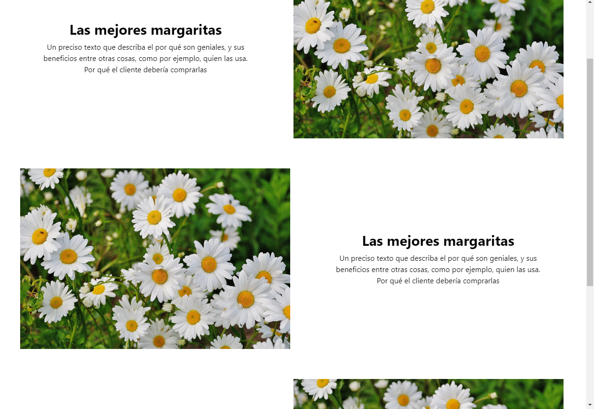

81% de las Personas Buscan el Sitio Web del Negocio Antes de Comprar
Imagina tener un sitio web donde muestras tus productos en varias secciones, junto a tu marca y su identidad, y para añadir más credibilidad y seguridad tienes una genial sección de criticas donde tus clientes dicen que tu negocio es increible. También tienes una sección de Preguntas y Respuestas donde detallas las preguntas más frecuentes, para que no estes contestandolas personalmente y aprobeches mejor tu tiempo. También imagina que publicas algo en Facebook y automaticamente se publica en tu sitio web, y que tienes una sección donde muestras tu blog, sin tener que usar herramientas de terceros, donde gente puede comentar.
81% de las Personas Buscan el Sitio Web del Negocio Antes de Comprar
Otra razon de por qué un sitio web es importante para tu negocio es que hay muchas personas que no te concideran como una opción de compra, si no tienes un sitio web.
Aparte de estar en las redes sociales, tener un Buen Sitio Web Instataneamente incrementa tu credibilidad como un negocio legitimo, (mientra que no tenga un diseño horrible, por supuesto). La primera impresión cuenta, aquí es donde entra la importancia de un buen diseño.
Es Bastante Barato
No es cómo antes, en donde no había mucha información y era considerada como una nueva tecnología. Cada ves se va haciendo más y más barato y más rapido de crearlas. Podrías estar ganado trafico con solo mencionarla en tus actuales redes sociales, por lo que al final, no cuesta casi nada. Puedes tener un sitio web por solo 4 mil pesos.
Ya usas Facebook, ¿por qué no expandir tu negocio con una Increible Sitio Web por tan barato?